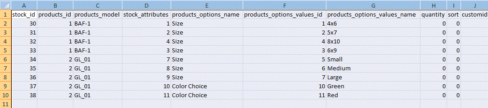
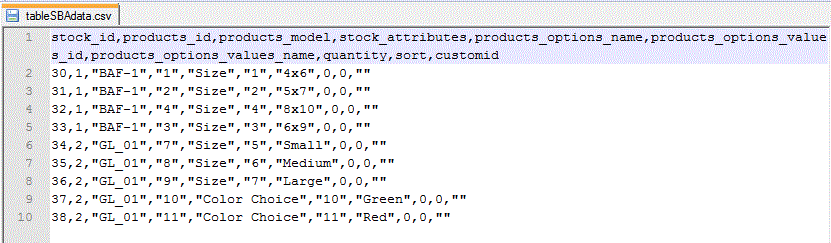
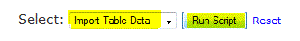

Installation | Configuration | Attribute Stock Setup | Optional Update | Optional Export / Import | Notes | HOME
Purpose of this script is to Export all existing data from products_with_attributes_stock table, so the user can easily change all or some of the stock quantities for attribute variants.
This optional script could be found in http://YOUR_DOMAIN/YOUR_ADMIN/stock_by_attr_install.php or admin>Configuration>Products With Atrtributes Stock.
When the user selects the Export Table Data option and clicks on Run Script,
this script exports a comma delimited csv file called tableSBAdata.csv, placing it under YOUR_ADMIN/temp/ folder. When opened in a spreadsheet program, it would look like this:

The raw file opened in a notepad application would look like this:

At this point under quantity column of your spreadsheet, update the quantities and customid for attribute variants. Save this file as a comma delimited csv file, with the same name, at the same location.
You are now ready to import / update all quantities of attribute variants at once.
IMPORTANT NOTE: Only change, the values in the Quantity and customid (if needed) column. All other fields are used for clarity and discription of the products and NOT used for re-importing.
Backup your databases prior to using these scripts.
Purpose of this script is to Import the csv file, YOUR_ADMIN/temp/tableSBAdata.csv, with updated quantities back to products_with_attributes_stock table.
This optional script can be found in http://YOUR_DOMAIN/YOUR_ADMIN/stock_by_attr_install.php or admin>Configuration>Products With Atrtributes Stock.
When the user selects the Import Table Data option and clicks on Run Script,

Existing quantity data in products_with_attributes_stock table, will get updated.
Only the rows (items) requiring update need to be in the uploaded file.
The uploaded file can be broken into sections, this may be necessary for large file uploads on slow servers.
Zen Cart Open Source E-commerce - Stock by Attributes
This contribution is subject to version 2.0 of the GPL license, that is bundled with this package in the file LICENSE, and is available through the world-wide-web at the following url: http://www.zen-cart.com/license/2_0.txt. If you did not receive a copy of the Zen Cart license and are unable to obtain it through the world-wide-web, please send a note to license@zen-cart.com.